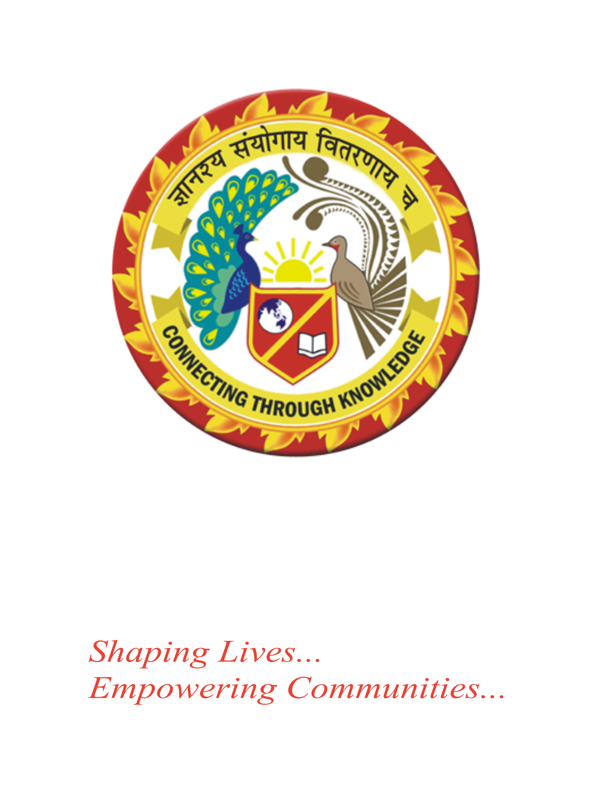

Institutional Context
Part of a university built
to shape lives.
Centurion University of Technology and Management is one of Odisha's most dynamic private universities, with campuses across the state and a track record of industry partnerships, research output, and placement outcomes. IFN is Centurion's bet on what higher education looks like in the age of spatial computing, blockchain infrastructure, and AI-driven design. Within the university system, IFN operates with the mandate to move fast — to stand up programmes in technologies that other institutions won't touch for five years.
Institutional Partners & Verifications
One of Odisha's leading private universities — NAAC accredited, UGC recognised, with a presence across multiple campuses in Odisha and Andhra Pradesh.
IFN's Blockchain Development programme is verified by the Avalanche Foundation — making it Odisha's first protocol-verified blockchain education programme.
Industrial Design students train on the 3DEXPERIENCE platform — the same collaborative product development environment used by aerospace, automotive, and consumer product companies worldwide.